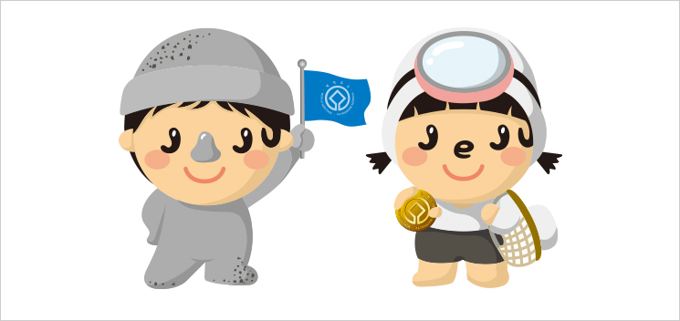

행정시
제주도의 마스코트
▲ 제주도의 마스코트인 "돌이”와 “소리”는 세계자연유산과 화산용암의 상징 ▲
현무암으로 만들어진 돌하르방이 연상되는 “돌이”와 제주의 해녀 옷을 입고 있는 “소리”. 얼굴 부분에 영문 ‘JEJU’가 보인다.
▲ 제주도의 마스코트인 "돌이”와 “소리”는 세계자연유산과 화산용암의 상징 ▲
현무암으로 만들어진 돌하르방이 연상되는 “돌이”와 제주의 해녀 옷을 입고 있는 “소리”. 얼굴 부분에 영문 ‘JEJU’가 보인다.
빙빙 마는 떡이라 하여 빙떡이라 부른다.
고운 메밀가루를 얇게 반죽해서 둥글게 전(煎)을 부친후 무, 당근, 파, 소금, 참깨가루, 참기름 등을 골고루 섞어 내용물을 만든 다음 전위에 올려놓아 둥글게 말면 빙떡이 된다.
빙떡은 통째로 손에 들고 먹는다. 여기에 좁쌀로 빚은 청주 한잔을 곁들이면 더할나위 없는 안주거리.
감태는 갈조식물 다시마목 미역과의 여러해살이 해조로 한국의 남해안과 제주, 일본 등지에 자생한다.
길이는 1∼2m이고 줄기는 원기둥 모양에 밑둥은 뿌리 모양이다. 전복·소라 등의 먹이가 되기도 하고, 알긴산, 요오드, 칼륨을 만드는 공업원료로 사용되기도 했다.
제주에서는 7월이 감태의 번식기이자 채취기다. 감태는 '정게호미'를 가지고 해녀들이 직접 물 속으로 잠수해 들어가 베어내기도 하고, 파도에 떠밀려온 것을 '공젱이'로 줍기도 한다.
돌의 나라 제주. 바다와 뭍에 지천으로 깔린 돌, 돌무더기, 돌 조형물은 섬사람들의 삶과 죽음을 넘나들며 생존의 방식을 일깨워 준 살아있는 제주인의 역사다.
제주의 돌 문화는 요람에서 무덤까지 돌과 더불어 살아온 섬사람들의 아픔과 슬픔, 그리고 희망의 담보물이다.
제주의 풍경은 바람에 의해 밋밋하지 않고 살아 꿈틀대는 생명력을 얻는다. 북풍에 몰아친 팽나무가 한 곳으로 쏠리고, 북서풍을 받은 오름의 띠가 바람이 불어오는 반대 방향으로 납작 엎디어 있다.
겨울철 한라산에서 볼 수 있는 칼날 같이 날카롭게 형성된 기기묘묘한 설경도 제주에서만 볼 수 있는 이색적인 풍광이다. 날씨와 기후에 따라 시시각각 변하는 산간 풍광은 예술인들의 예술혼을 자극한다.
시, 그림, 사진 등 무수히 쏟아지는 예술작품은 제주 자연의 이런 내밀한 속성의 결과다. 제주의 강한 바람은 제주 사람들의 언어환경도 바꿔 놓았다. 말이 거세고, '강, 봥, 왕'처럼 축약형 언어가 발달한 것도 바람의 영향이다.
신화와 민속, 민요, 언어 등 제주의 토착 문화의 중심에는 여성들이 있다. 목숨 걸고 거친 바다에서 생존을 낚아 올리는 제주 잠녀들.
그들의 근검하고 강인한 삶은 제주여성의 표상이자, 제주인의 삶의 지표다.제주여성은 뭍과 바다를 넘나들며 바지런한 삶을 꾸려왔다. 그들의 삶은 개인의 삶이 아니라 더불어 사는 공동체의 삶이었다.
1932년 외세의 수탈과 착취에 맞서 요원의 불길처럼 일어났던 제주잠녀항쟁은 제주여성들의 강한 자존심과 저력을 보여준 대표적인 예다. 제주여성들의 삶의 방식과 문화는 제주민들의 삶의 철학이 됐고, 문화를 이루는 근간이 됐다.